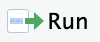
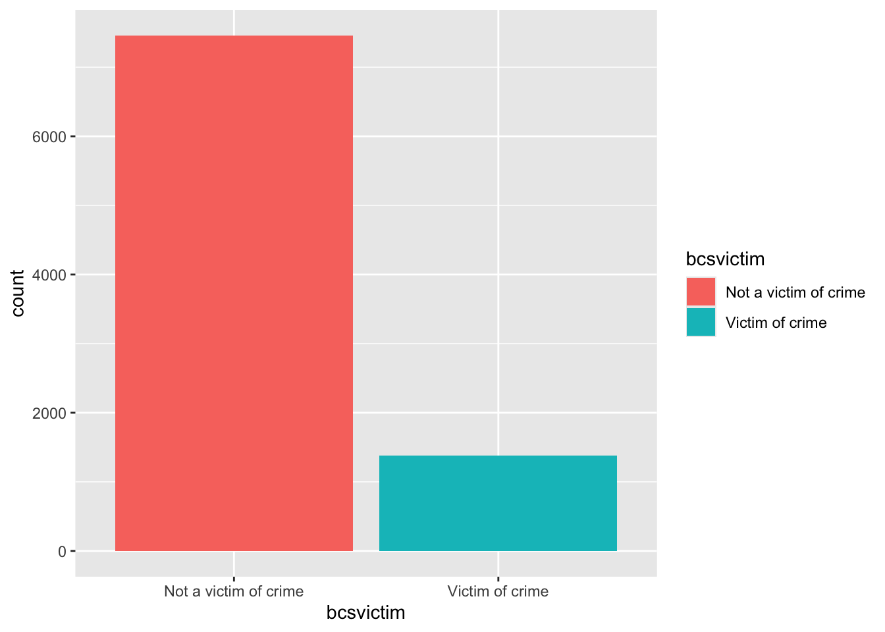

library(ggplot2)
library(summarytools)LK2025 Week X
Conducting univariate descriptive analysis
Introduction
This week we are going to use R to conduct descriptive analysis of a single factor (cateogrical) variable. A factor variable is one where the ‘values’ are categories typically mirroring responses in a survey question. Examples include ethnicity, education qualifications, sex, region. Factor variables with two possible values are sometimes referred to as dichotomous or binary variables variables. Factor variables with three or more possible categories are sometimes referred to as nominal or categorical variables.
We are going to work through the following steps:
- Install and load required packages
- Import data
- Produce frequency distribution
- Produce a bar graph showing the frequency distribution for a single variable
Install and load required packages
We will be exploring single factor variables by looking at frequency distributions (tables) and graphs, using functions from two packages:
summarytoolsprovides a number of functions to describe factor variablesggplot2is used to produce graphs
The following code snippet will install these two packages.
install.packages(c("ggplot2", "summarytools"))
If you are using computers on campus you need to install these packages each time you log on and start RStudio. If you are using your own computer you only need to do this once.
Copy and paste the R code in the above snippet into the console and hit enter. Alternatively, copy and paste the code snippet into an R Script, highlight the line and click on the run icon at top-right of the source pane.

Once the packages are installed, you then need to load them in order to use the functions, as shown in this code snippet. Again, you can copy this R code snippet into the console and hit enter, or copy/paste into your R script, highlight and click run.
Importing data into R
We will be analyzing data from the Crime Survey of England and Wales (CSEW), which is an annual victim survey providing national statistics about crime rates, and collects a wide range of other information relating to crime and the criminal justice system including the police. We will be using an open access unrestricted version of the CSEW from 2013-14. Detailed information about the data we are using can be found here. You should regularly consult this documentation as you use the data.
You can read (import) many types of data into RStudio. Data is saved in different file formats, and each format has a distinct file extension. A common file type is a comma separated variable file (e.g., ‘file.csv’) which is a basic type of excel file. You can also read in standard excel files (e.g., ‘file.xlsx’), and files from other statistical packages such as SPSS (e.g., ‘file.sav’) and Stata (e.g., ‘file.dta’). In this module we will be working mostly with .csv files and .sav (SPSS) files.
The code below reads the csv file ‘csew.csv’ into RStudio.
csew <- read.csv("../Data/csew.csv", stringsAsFactors = TRUE)The snippet above has different components. We will consider each of these in turn:
csewwe begin by giving the data file a name. We can use any name, but pick something that will be easy to type and give you enough information to know what the name refers to (Note: you will likely have a number of data sets in memory in any real-world data analysis project).<-this is called an assignment operator. Think of this as similar to an = sign.read.csv()This is the command function to read the csv file. Note that in the above snippet there is R code within the brackets.- There are two parts to the R code within the brackets, separated by a
,:"../Data/csew.csv"This is the name of the file (including file path information), and this is placed in quotes always.stringsAsFactors = TRUEThis ensures that any values in the data that are strings (text) will be treated as factor (categorical) variables. We could set this to beFALSEand then set the type of each variable individually where appropriate. With this data set we can safely set this to betrueand save time doing that - but this may not always be the case for any data set you are using so important to check.
After you run this code, you should see the data set loaded into the Environment pane in RStudio, with information given about the number of observations (obs.) and the number of variables. This corresponds the number of rows and columns respectively.

Produce a frequency distribution
Having installed the necessary packages and imported the data, we are now ready to produce a frequency distribution for a single factor variable. The following code snippet will produce a frequency distribution for the variable bcsvictim producing a table showing the proportion of people in the sample who were a victim of crime and the proportion who were not.
There are two things to note in this code snippet:
with(csew,You always have to state clear what data set you are using in R. One way of doing this is to use thewith()function. In words, we are staying: ‘with this data set, do this’. There may not seem much point in this when working with a single data set, but in any real-world project you are likely to have several data sets in play.freq(bcsvictim)This R code produces the frequency distribution for the variablebcsvicim. If you wanted to look at another variable, simply change the name inserted in the brackets in this part of the code.
As before, copy this code directly into the console and hit enter, or copy/paste into your R script, highlight the line and run.
with(csew, freq(bcsvictim))Frequencies
csew$bcsvictim
Type: Factor
Freq % Valid % Valid Cum. % Total % Total Cum.
--------------------------- ------ --------- -------------- --------- --------------
Not a victim of crime 7460 84.36 84.36 84.36 84.36
Victim of crime 1383 15.64 100.00 15.64 100.00
<NA> 0 0.00 100.00
Total 8843 100.00 100.00 100.00 100.00The first column of the table output, labelled Freq, shows the number of people in the sample who have not been a victim of crime (7460) and number who have been a victim of crime (1383). You can see a third row in this table labelled <NA>. This refers to cases where there is missing information about the variable. In this particular example there are zero cases with missing data for this variable.
The next column, labelled % Valid, shows the %s who are a victim/not a victim of crime excluding any cases that are missing. As there are no cases missing, this is identical to the column labelled % Total which report the %s including any cases that are missing.
The column labelled % Valid Cum. reports the cumulative proportion. In this column, each % is added the proportion in the row immediately prior working from top to bottom. This is not particularly informative when you only have two response categories, but can be useful when you have more.
The code snippet below produces a more compact table removing the cumulative proportions and the row corresponding to missing data <NA>. You can undo either of these restrictions by changing the conditions from FALSE to TRUE. It is important always to check for missing values when you first begin to explore variables in a data set.
with(csew, freq(bcsvictim, cumul = FALSE, report.nas = FALSE))Frequencies
csew$bcsvictim
Type: Factor
Freq %
--------------------------- ------ --------
Not a victim of crime 7460 84.36
Victim of crime 1383 15.64
Total 8843 100.00
Activity
Explore other variables in the data set. Produce frequency distributions for other variables in the data set, by changing the code relating to the variable name. Remember you can view the data using the View(csew) function, and get the names of all the variables using the names(csew) function. Also check the documentation for the data.
Produce a bar graph showing a frequency distribution
Data visualizations are a great way explore data and uncover key relationships between variables. The code snippet below produces a simple bar chart for the variable bcsvictim showing the number of people who have been a victim of crime or not. Though not the most visually appealing, the graph emphasises that the vast majority of people in the sample have not been a victim of crime.
ggplot(csew, aes(x = bcsvictim, fill = bcsvictim)) +
geom_bar() 
Deconstructing this code
There is a lot of unpack in this R code:
ggplot()The first line of code is the main command function, which has a number of parts in the brackets. These are described as follow:csew,The first part of code in brackets specifies the data set we are using the make the graph. Note the essential,.- The second part of the code in brackets is the
aes()function.aesis short for aesthetics and this code specifies what data you are plotting. There are two parts to this:x = bcsvictimspecifies the variable being plotted on the x (horizontal) axis.fill = bcsvictimspecifies that the bars will have different (fill) colours based on values of the variable. If omitted, the bar graph will default to a single colour (grey).
geom_bar()The second line of code is the command function that determines the type of chart you are making - in this case a bar chart. Note also the+at the end of the first line, connecting this to the second line.
There are many options to change the look of any data visualization, and we will explore some of these as we progress through the module. There are lots of online resources also.
Activity
Explore other variables in the data set. Produce simple bar charts for different variables in the data set.